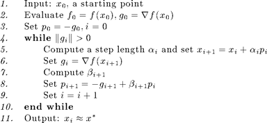
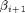
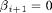
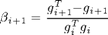
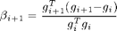
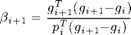
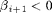
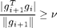
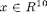
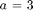

Nonlinear Conjugate Gradient Optimization
Nonlinear conjugate gradient (NCG) methods [3] are used to solve unconstrained nonlinear optimization problems. They are extensions of the conjugate gradient iterative method for solving linear systems adapted to solve unconstrained nonlinear optimization problems.
The Poblano function for the nonlinear conjugate gradient methods is called ncg.
Contents
Method Description
The general steps of NCG methods are given below in high-level pseudo-code:

Conjugate direction updates
The computation of  in Step 7 above leads to different NCG methods. The update methods for available in Poblano are listed below. Note that the special case of  leads to the steepest descent method [3], which is available by specifying this update using the input parameter described in the Method Specific Input Parameters section below.
Fletcher-Reeves [1]:

Polak-Ribiere [4]:

Hestenes-Stiefel [2]:

Negative update coefficients
In cases where the update coefficient  , it is set to to avoid directions that are not descent directions [3].
Restart procedures
The NCG iterations are restarted every n iterations, where n is specified by user by setting the RestartIters parameter.
Another restart modification available in ncg that was suggested by Nocedal and Wright [3] is taking a step in the direction of steepest descent when two consecutive gradients are far from orthogonal. Specifically, a steepest descent step is taking when

where is specified by the user by setting the RestartNWTol parameter. This modification is off by default, but can be used by setting the RestartNW parameter to "true".
Method Specific Input Parameters
The input parameters specific to the ncg method are presented below. See the Optimization Input Parameters documentation for more details on the Poblano parameters shared across all methods.
Update Conjugate direction update {'PR'}
'FR' Fletcher-Reeves
'PR' Polak-Ribiere
'HS' Hestenes-Stiefel
'SD' Steepest DecsentRestartIters Number of iterations to run before conjugate direction restart {20}RestartNW Flag to use restart heuristic of Nocedal and Wright {false}RestartNWTol Tolerance for Nocedal and Wright restart heuristic {0.1}Default Input Parameters
The default input parameters are returned with the following call to ncg:
params = ncg('defaults')
params =
Display: 'iter'
LineSearch_ftol: 0.0001
LineSearch_gtol: 0.01
LineSearch_initialstep: 1
LineSearch_maxfev: 20
LineSearch_method: 'more-thuente'
LineSearch_stpmax: 1e+15
LineSearch_stpmin: 1e-15
LineSearch_xtol: 1e-15
MaxFuncEvals: 100
MaxIters: 100
RelFuncTol: 1e-06
RestartIters: 20
RestartNW: 0
RestartNWTol: 0.1
StopTol: 1e-05
TraceFunc: 0
TraceFuncEvals: 0
TraceGrad: 0
TraceGradNorm: 0
TraceRelFunc: 0
TraceX: 0
Update: 'PR'
See the Optimization Input Parameters documentation for more details on the Poblano parameters shared across all methods.
Examples
Example 1 (from Poblano Examples)
In this example, we have  and  , and use a random starting point.
randn('state',0);
x0 = randn(10,1)
out = ncg(@(x) example1(x,3), x0)
x0 =
-0.43256
-1.6656
0.12533
0.28768
-1.1465
1.1909
1.1892
-0.037633
0.32729
0.17464
Iter FuncEvals F(X) ||G(X)||/N
------ --------- ---------------- ----------------
0 1 1.80545257 0.73811114
1 5 -4.10636797 0.54564169
2 8 -5.76811976 0.52039618
3 12 -7.62995880 0.25443887
4 15 -8.01672533 0.06329092
5 20 -9.51983614 0.28571759
6 25 -9.54169917 0.27820083
7 28 -9.99984082 0.00535271
8 30 -10.00000000 0.00000221
out =
Params: [1x1 inputParser]
ExitFlag: 0
X: [10x1 double]
F: -10
G: [10x1 double]
FuncEvals: 30
Iters: 8
Example 2 (from Poblano Examples)
In this example, we compute a rank-4 approximation to a  Pascal matrix (generated using the Matlab function pascal(4)). The starting point is random vector. Note that in the interest of space, Poblano is set to display only the final iteration
is this example.
Pascal matrix (generated using the Matlab function pascal(4)). The starting point is random vector. Note that in the interest of space, Poblano is set to display only the final iteration
is this example.
m = 4; n = 4; k = 4; Data.rank = k; Data.A = pascal(m); randn('state',0); x0 = randn((m+n)*k,1); out = ncg(@(x) example2(x,Data), x0, 'Display', 'final')
Iter FuncEvals F(X) ||G(X)||/N
------ --------- ---------------- ----------------
39 101 0.00005424 0.00136338
out =
Params: [1x1 inputParser]
ExitFlag: 2
X: [32x1 double]
F: 5.4244e-05
G: [32x1 double]
FuncEvals: 101
Iters: 39
The fact that out.ExitFlag > 0 indicates that the method did not converge to the specified tolerance (i.e., using the default StopTol input parameter value of 1e-5). This exit flag indicates that the maximum number of function evaluations was exceeded. (See the Optimization Output Parameters documentation for more details.) Increasing the number of maximum numbers of function evaluations and iterations allowed, the optimizer converges to a solution within the specified tolerance.
out = ncg(@(x) example2(x,Data), x0, 'MaxIters',1000, ... 'MaxFuncEvals',10000,'Display','final')
Iter FuncEvals F(X) ||G(X)||/N
------ --------- ---------------- ----------------
76 175 0.00000002 0.00000683
out =
Params: [1x1 inputParser]
ExitFlag: 0
X: [32x1 double]
F: 1.6469e-08
G: [32x1 double]
FuncEvals: 175
Iters: 76
Verifying the solution, we see that we find a matrix decomposition which fits the matrix with very small relative error (given the stopping tolerance of 1e-5 used by the optimizer).
[U,V] = example2_extract(m,n,k,out.X); norm(Data.A-U*V')/norm(Data.A)
ans = 5.4828e-06
References
[1] Fletcher, R. & Reeves, C.M. (1964). Function minimization by conjugate gradients. The Computer Journal, 7, 149-154.
[2] Hestenes, M. R. and Stiefel, E. (1952). Methods of conjugate gradients for solving linear systems. J. Res. Nat. Bur. Standards Sec. B., 48, 409-436.
[3] Nocedal, J. and Wright S. J. (1999). Numerical Optimization. Springer.
[4] Polak, E. and Ribiere, G. (1969). Note sur la convergence de methods de directions conjugres. Revue Francaise Informat. Recherche Operationnelle, 16, 35-43.
| Poblano Toolbox |